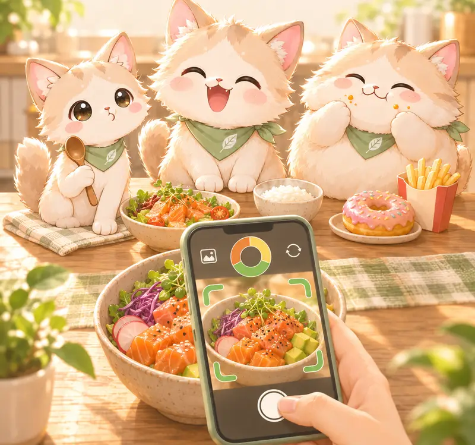
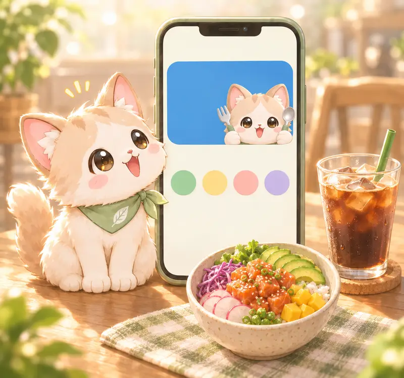

-
 사진 한 장
사진 한 장찍기만 하면 AI 기록
사진 한 장만 찍으면 AI가 칼로리와 탄단지를 알아서 기록해 줘요.
-

냐미의 모습먹는 대로 바뀌는 냐미
거르면 홀쭉, 과식하면 통통, 알맞게 먹으면 딱 좋은 모습으로 자라요.
-
기록 보상
먹방 보고 방 꾸미기
식사를 기록하면 귀여운 먹방 컷신과 함께 방을 꾸밀 보상이 열려요.
-

홈 화면 위젯홈 위젯에서 기다려요
폰을 켤 때마다 홈 화면 위젯에서 냐미가 반갑게 집사님을 기다려요.